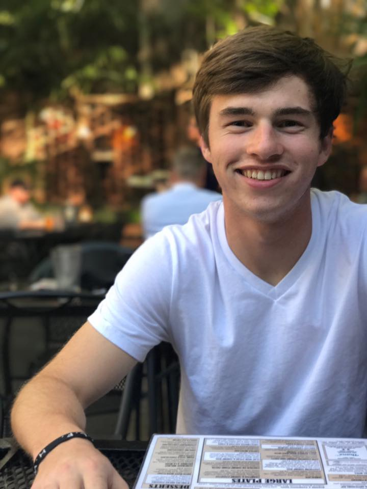
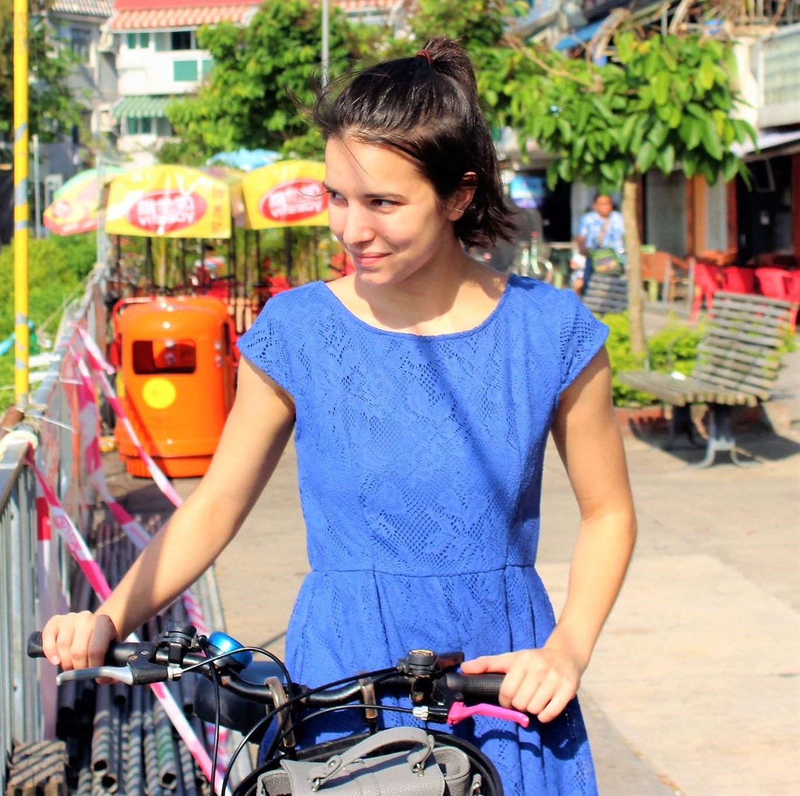
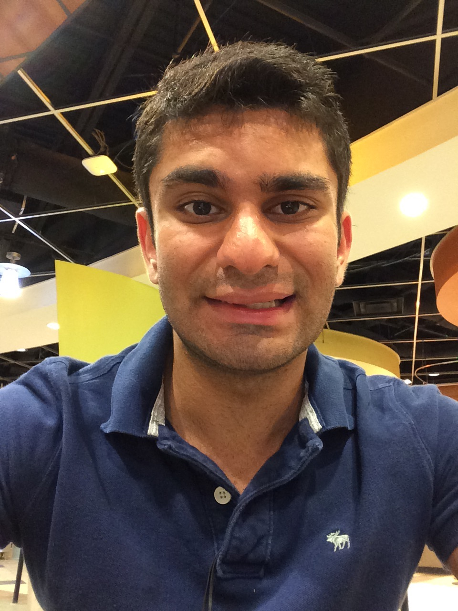
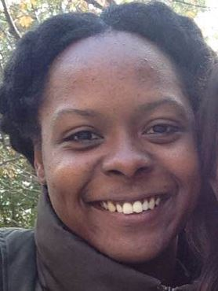
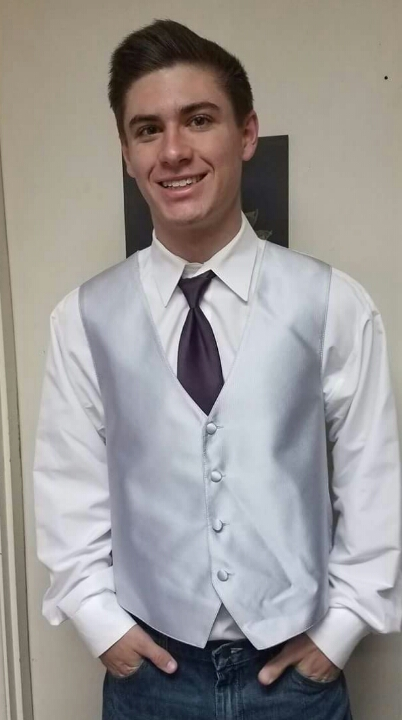

Our Team
Joshua Sterling
Vision Team Leader

My story begins in the city of Charlottesville, Virginia, where I was born in November of 1995. My dad was the pastor of a small church in the city and my mom had just quit her job to stay home and take care of me. Fast forward seven years and I was living outside of Atlanta, Georgia and had two little sisters.
The date was March 16, 2003. It was late in the evening and my dad was leading our family in reading the Bible before bedtime. It was during that time I understood in my heart the mystery of the gospel of Jesus. I knew that even as a small child I had sin in my life that separated me from God who created me. During the middle of my dad’s reading of the Bible, I screamed out, “I need to be saved!” and then burst into tears. My dad talked with me, and I then prayed and put my faith in Jesus that night.
Six years later, my family and I were moving again, this time to Augusta, Georgia. I graduated high school from a small Christian School and then left to go back to Atlanta and attend Georgia Tech for college. Living on my own began to challenge me in new ways. I was faced with the decision of how I was going to live my life. No one was there to tell me what to do; I was acting on my own in the world. While I knew that God was real and wanted to follow Him in how I lived, many times my selfishness got in the way. I was going to church every now and then and semi involved in BCM, but I was not relying on God to lead me everyday.
The summer after my sophomore year things began to change. On the 4th of July I attended a fireworks show where gunfire broke out in the darkness of the onlooking crowd. In that moment, I genuinely feared for my life. In the days that followed, I came to understand just how temporary my life was and began to rethink how I was living. I told God that I was open to whatever He had for me. From that point on, I started to really grow in my faith in Jesus.
The following school year God began to challenge me in sharing my faith in Him with others. I felt like God wanted me to go to the first Great Exchange that semester and share my faith. At first I was hesitant and began to make up excuses not to go, but eventually I decided to trust God with it and do it. I was able to share the gospel with a student that stopped by and it was awesome. After that, I was not scared like before but began to be excited that God was using me to tell people about Him.
My whole junior year was filled with different areas where God was calling me to take steps of faith and grow closer to Him. At the end of the year, I decided to apply for a position to serve on the vision team at BCM. In addition, I also decided to apply to live at the BCM as resident manager. If you would have asked me as a freshman or sophomore if I ever thought I would do either of those things, I would have probably said no way!
What I have discovered is that God has a way of calling us to the things that we do not want to do to increase our trust and faith in Him. I am now the vision team leader for evangelism as well as a resident manager at the BCM and it is a testament to God’s work in my life and nothing of my own doing. God is good and I am so thankful that He is ever faithful to pursue me. My goal is to be faithful in seeking and pursuing God each day of my life and to share my faith with the people around me.
Parker Gordy
Action Team Member

My name is Parker Gordy and I am a second year Mechanical Engineering major here at Georgia Tech. I was born in Jacksonville, Florida, but grew up in a little town called Rincon, right outside Savannah, Georgia. I was the first child in my home, and was born into a loving Christian family. My mom and dad are both from the south and that’s where they decided they wanted to start their family. Ever since I can remember, I was taken to church every Sunday, Wednesday, or pretty much anytime the doors were open. I made all my childhood friends at the church, many of which I am still very close with today. I am not exactly sure when, but sometime when I was still pretty young, I began to realize what it meant to have a personal relationship with Jesus. I did not understand all the details and intricacies of this, but I did realize that I was a sinner that had no hope of salvation except through Jesus.
As I came into high school, I realized what it meant to live for Christ in a lost world. Thankfully I was still in a very traditional school and community, but that did not mean that there were not temptations and trials to distract me from walking daily with God. I also began to meet many people and get involved in so many things that keeping God a priority was getting harder and harder. About halfway through sophomore year, I really came to a crossroads in my faith. It was here that I really decided to be ‘all-in’, to try and live for Christ in every aspect of my life. This took dedication, but is what I was called to do as a Christian. I was able to get involved in our Christian ministry at the high school, along with starting to help lead worship and discipleship at my church in Rincon. Starting to do all these things made me begin to realize that God had given me a gift of service. I was not able to speak to people very well, or be in the spotlight, but he allowed me to serve those who needed it. I was able to start helping some of the older people in our church and community, as well as encourage and teach some of the kids that were younger than me. This continued all the way through senior year until I left for college. By the time graduation came, I was able to see the tangible evidence of God working through me in my church and my community. This really was encouraging to see how God manifested himself into my life.
As I left for college, I had full intentions of continuing to serve as I did back home. However, I severely underestimated how hard Georgia Tech would be. It really took me by surprise how fast my life became consumed by academics. Along with this rigor came the novelty of anyone going to college for the first time. I had never been in such a free and open environment, and had never faced as many temptations as I did. I began to make many new friends, not all of them being positive influences in my life. As my first couple of semesters continued, I was faced with so many opportunities to take my focus off of Christ. There were parties, alcohol, and so many more things. I found it very easy to be comfortable with all these things, since most of my friends were right there with me. However, I also began to get involved with the BCM. I had intentions of getting involved in a campus ministry when I left home but it slowly moved down on my priorities. I realized as my fall semester continued that I was not living the life I needed to, and was drifting away from my God that had been so faithful to me. I began to come to the BCM more and more, and continued to get involved in the lives of people there. At last, I found where I belonged. I started getting back to living the life I had before I left for college, helping and serving where I could.
If I could offer any encouragement, it would be to remain faithful and remain disciplined. The devil has thousands and thousands of ways to tempt you, and it may seem that everyone but you are caving in. But know that God’s plan for you is so much greater. He loves you and he has made you for a purpose. I’m not saying that life will be easy, but it is much easier when you know that God has a will for you and your life. This is the same God that causes mountains to move and the seas to split. I am reminded of this daily and try my best to pursue that relationship with God.
Cole Keenum
Action Team Member

I don’t recall my first encounter with God; He was already working in my life before I was old enough to remember, even before my birth. And when I was born, I was blessed to be born to a mother and a father who loved the Lord, and raised me accordingly. As a toddler, my parents read something biblical to me each day. They took me to church, dedicated me, and taught me about Jesus.
When I was seven, our family visited another church service, where the pastor very plainly presented the Gospel. I remember feeling challenged: I had heard this message before, but had I received it? I wanted to respond, but I was too afraid to go down into the aisle. Besides, what would my mom think? There was this tugging on my heart, and later in the car I cried, but I couldn’t understand my own emotions at the time. I only knew that I had to do something.
And one night, after my family did our nightly bible study, I decided that I wanted to “ask Jesus into my heart.” I believed that I was a sinner who was separated from God and that Jesus came to the world to ultimately die and bridge that gap. I wanted to know and follow God. Soon thereafter I was baptized (on the same night as the 2005 Super Bowl).
As I grew up, I would sit in an untold number of AWANAS nights or church camps, and I heard the speaker lead a sinner’s prayer repetitively. That constant reinforcement, I think, lead to some doubts. Did I really believe what I meant when I was a lowly seven-year-old? Did I really understand the Gospel then?
As I grew older, I encountered new ideas, like atheism. I knew people didn’t believe in Jesus, that besides Christians there were at least Muslims and Jews, but I was astounded to find people who actually believed that God did not exist. How did they account for life? What caused the world to exist? What did they believe happened upon death?
By this time, I had access to a library, Google, and YouTube, and so I casually researched these topics. Of course, this was the period of the “New Atheism” movement so I was bombarded with infinite counters to everything I had ever believed in. I had no formal apologetical training. Who was I compared to these credentialed professors and scientists?
I began to really ponder: Was my belief a product of my upbringing? I live in a (more or less) Christian nation, and was born to Christian parents who took me to church twice a week. Of course I would choose to become a follower or Jesus! I had no other choice presented to me! But what if I was wrong, and the Muslims or Hindus were right? What if I wasn’t sincere in my original declaration of faith? Or worse, what if I lived in a truly godless world?
I doubted my faith for the first time.
I struggled with anxiety over my dilemma. What would my parents think about my doubting? If there is no God, what is the point of my life? The whole world seemed to be built upon shaky foundations, and my anxieties began to influence other areas of my life. After all, the entire lens through which I processed the world was cracking before me. At times, I was on the brink of nihilism.
In response, I embarked on an intellectual mission. I wanted to know if my beliefs held up to a standard of evidence. I am a person who does not use the phrase “I believe” or “I feel” in everyday conversation—I say “I think.” When I take personality tests for my health class, I
always score high on my emphasis on logic and my abandonment of emotional decision-making. I have never wanted to be wrong, and if my beliefs did not stand up to reason, I wanted to change them.
My resolution took years of searching. I read many books and articles, researching to the fullest of my ability. I had many conversations with friends, family, and people in my church. There was always a resource or person who could answer my questions (I think God had something to do with that). In the process, I built up an intellectual framework for my faith. Throughout the process, I never abandoned my belief in Jesus, and through cross-examination, my faith came out stronger than ever.
I began to better understand who God is, and who I am. I developed a perspective of my smallness, and His infinite grace. I saw the Bible as one divine exposition of God’s plan for humanity, not a collection of stories. When I looked back on my own life, I saw that God was there at every step, answering every doubt with truth.
In questioning my faith, it became my own, separate from culture or my parents. I realized that my relationship with God was between Him and I, and in doing so I answered the question that originally started my doubts. My worldview again rested upon the Rock.
Since then, I was blessed to be one of the first participants in a high-school discipleship group which met every Wednesday. I saw the Lord work through many lives, and, by the grace of God, I used some of my experiences to answer the spiritual questions of others. I grew and worked through some serious sins in my high-school life. Two years after it began, most of the original participants have gone off to college, but the group remains, repopulated with another generation of students, hungry for the Lord.
Now at Georgia Tech, I’ve never had more opportunities to share the Gospel with others. Away from the mitigating influence of family and thrown into a brutally difficult institution, I have had to rely more than ever upon God and His plan, but I have found an incredibly strong and challenging group of friends to grow with at the BCM.
God is working on this campus, and I want Him to use me for His purpose. That’s why I joined the evangelism team, and serve as a community group leader on Thursday nights.
Although I have more than double the life experience since the moment I first believed, my faith remains strong, and it grows stronger still. I hope to share that faith for the rest of my life.
Rachel Furnish
Action Team Member

This is the story of how God revealed to me His faithfulness, His love, His grace, His joy, His call, and finally, His justice.
My parents introduced me to Christ when I was young. I grew up memorizing scripture and was baptized when I was eight, believing in the love of God and his perfect Son’s sacrifice and resurrection. I thank my parents for this priceless knowledge, but my story does not end there.
During my teenage years, academic and interpersonal struggles caused me to doubt everything I knew about myself and God. I had two options: to despise God for the situation He had given me and reject His existence or to embrace Him and beg Him to show me love. By His grace, I chose the latter.
During those years, I explored God and grew closer to Him; but I also had many moments of doubt and frustration. No matter what, God desired to change me in ways I could not imagine.
During the summer after my freshman year at college, I often woke up at 5am. Unable to sleep in those early hours, I read my Bible. I read in Luke about the woman to whom Christ lovingly said, “You are set free from your infirmity; go now and leave your life of sin”. These words changed my life. I finally understood the gospel fully: that God created me and gave me free will. I sinned many times, especially through anger and selfishness, but in His perfect love God sent his Son to live the perfect life and die on the cross and rise again three days later, defeating death. Jesus’ resurrection allowed me to have a relationship with God and for the first time, I experienced a flood of grace.
I realized that throughout my entire life, I had believed that God would save me; but for the first time, I realized that God had saved me. I experienced a beautiful season of peace as my Savior removed distractions and allowed me to experience Him. The beauty of the cross is that I don’t have the right to blame myself, or even other people for all of the pain I experienced as a result of their actions.
In fact, salvation means that Christ has taken the blame. He has paid the penalty for not only my lifelong sins and rebellions, but also those of everyone who caused me pain. Everyone whose actions in some way harmed my emotional being, my physical being, and even my spiritual being...and of course those whose actions harmed people I’ll never know, have been covered by the blood of Christ upon the cross.
Since then, God has led me through my undergraduate degree and on to grad school at Georgia Tech. Whether His call leads me to be a student, a researcher, or anything else, I know that my purpose in life is to share the love and peace that God has brought me with other people.
Shahan Khan
Action Team Member

Hello, my name is Shahan Khan. First, I’d like to mention I’m glad to have another opportunity to testify about what God has done and continues to do throughout my life. As God continues to work in my life, this will be updated over the course of time.
I happened to grow up in a Muslim family. However, unlike most children, I spent my early childhood born and raised with my grandmother. As older generations tend to be more disciplined in their faith, I learned to practice the religion in the most respectful manner possible. By the age of seven, I’ve already memorized the last 17 chapters of the Quran used for the five daily prayers. Around this age, I also finished one whole recitation of the Quran; a notable accomplishment for all Muslims. All in all, I was very fond of this religion.
I soon began to realize that what I began to read at such a young age was words that I could not understand. The Quran is written in Arabic, and not one of my known languages. I was merely told how to read the language, not understand it. This troubled me to a large extent. By the time I was thirteen, I obtained an English Quran from my parents and began to read it during my free time.
As I began to read, I can honestly say at the time, I had no major problems with the faith. There were some chapters that did catch me off-guard, one of which is Surah 8, An-Anfal (Surah means chapter is Arabic.) This chapter is the spoils of war chapter of the Quran, and for obvious reasons, this chapter troubled me. After my first recitation of the English Quran, I’d love to say it stopped there. It didn’t. However, I soon began to realize one thing – The Quran didn’t tell me much about this claimed prophet Mohammed I was supposed to emulate. I wanted to know more, and asked my family how I could know more. My grandma bought the most reputable resource about Mohammed, a book called Sahih Al-Bukhari.
As I began to read more, I was more in disbelief. I was shocked of many of the actions Mohammed committed. I was told growing up Mohammed was the best chiefs man, statesman, and diplomat. I was told Mohammed deserves every epitaph you throw at him because he’s Mohammed – the chief of the prophets. All in all, the more acts I read that Mohammed committed started doubt. I began to question his title of prophethood, and started to develop a curiosity of searching other religions.
As I continued my search for religion, I ultimately began to look into the Abrahamic religions. I began a reading of the old testament. As I was reading I came across the book of Daniel. Specifically, Daniel 7:13-14 caught my eye. At the time, I was unsure of what these verses meant. As God made me more familiar with scripture, I noted that these verses are alluding to Jesus and his divinity. I began reading more of the old testament, and eventually started on the New testament as my curiosity grew for the divinity for Jesus.
Before reading the new testament, I learned how to study the historical method. Coming across Romans 10:9, I established a criterion for the case of Christ. In all, I researched the death, deity, and resurrection of Christ as objectively as possible. After a few long, devastating and many impactful years, I had two choices. 1) Tell my family and face the consequences 2) Hide until I moved away from my family. I chose option two, but faced many challenges. The conviction to hide was at times overbearing, and the only way out of it was to sin. I ended up living my life the way I wanted to. However, it didn’t stop there. I had two strong Christians I had in my life that I wanted to voice out to. I concluded that I couldn’t risk any chances of my family knowing. Eventually, they were out of my lives by the end of my senior year.
My first year of college flew by without much happening. During the first semester of my freshman year, I came across an encounter with a friend. Somehow, the topic of religion got brought up. That night, I ended up revealing everything I had hidden for years. At the time, I couldn’t say what it was, but looking back now I felt the presence of God. And wow, it indescribable. Beyond indescribable by all human measure. A presence beyond any earthly words that embodied me. I struggled with insomnia, and that night, I went to sleep within seconds of falling into my bend – a miracle of God to say the least. The next day (sometime before thanksgiving), I gave my life to Christ and knew this time there was no way out. Not too long after, I told my family. After many miserable moments including a failed attempt to take my life, I can honestly say I was never grieved during this time. Waking up the following day after telling my family, everything I looked at had a glow. When I walked outside, I saw a man walking around the neighborhood. But I didn’t see this man as a pitiful and disgusting being – but rather a man that God loved just as much as He loved me.
Ever since then, my life has been utterly changed. This fire for God emerged, in where studies weren’t my focus at all, but God. Despite the fact that I knew I needed to make all A’s for GATech, I chased God wherever I could. Ultimately, I lacked the will to study. From here on, I’d like to say everything was perfect, but there was a time where I stumbled with sexual immorality with a longtime friend. The conviction was overbearing, and I knew that the only woman that’s perfect is the one God has laid out for me. God pulled me back to Him, and through more tough times I made it through with His grace. The fire returned, and God pulled me in for many opportunities to serve throughout the semester and summer. From preaching, serving as a counselor at camp, pouring out to others, being poured into, and mission trips – The grace was enough.
I’d love to go into further detail as I feel this was very shorthanded, but it would be over 20 pages long (possibly an underexaggerating). If anyone is willing to know more, I’d love to share.
Moradeke Olumogba (Rade)
Action Team Member

My name is Moradeke Olumogba, but I am called Rade. I came to know the Lord around the age of 14 or so whilst in school. In a class about wellbeing and life, the teacher told us about how many people become so academically qualified and yet are made redundant in the workplace. This devastated me because I value academia so much and trusted that it would take care of my future. I decided to read John’s Gospel and for the first time I actually felt sorry for my wrongdoings. Towards the end of the book, I came to realize that I must choose whether I would follow Jesus or not. At first I was hesitant because I knew I was a hypocritical person, but I heard a voice promising that I wouldn’t be like that because [Jesus] will be with me. Ever since then, I have been learning to take each day as it comes because Jesus has reconciled me to God so I will always find mercy. That has proved true! Everyday I wake up and do not find myself in hell I become more confident and assured of the reconciliation. It makes me more God-centered rather than self-centered in my thinking and doing. Jesus Christ has given me hope that I will always find mercy, and that is what keeps me motivated in life.
Alex Arnold
Action Team Member

Hello my name is Alex Arnold and recently I have been praying to God and asking him to put on my mind what he wants me to do for him. One day I went to the woods to just have some quiet time with God and I just couldn’t get the word testimony out of my head. So, I started to pray if God wanted me to give my testimony. Although I wasn’t sure when he wanted me to give it I was felt like I was being lead to start working on mine and to be prepared to give it. This was around December 12 2016 just as a reference point. Testimony is a very powerful way to share the word of God. Testimony is how God has specifically worked in your life and can be very powerful since it is a personal experience. In John 4:39 an example is given of the power of testimony and how many people came to know Christ just through one women’s testimony.
John 4:39 “And many of the Samaritans of that city believed in Him (Jesus) because of the word of the woman who testified”
Let’s talk a little about my earlier years. So, when I was probably 7 or 8 my parents got a divorce this was hard on me but for some reason it didn’t ever really hit as hard as it probably should have. The divorce created a lot of financial struggles and several times I thought I might have to leave my school. I would sometimes go months without having the chance to talk to my dad and sometimes not see him for half a year. Despite not having a father figure for a lot of my earlier years I had a loving family who made up for that. I grew up in a Christian family going to church at Bethel Baptist. My whole family are firm believers in God so there was support everywhere I looked in becoming a Christian. I remember going to church and listening to the preacher give his sermons every Sunday. Most of the time I was bored and would draw on the bulletins while paying little attention to what the preacher said. But every Sunday the preacher would have a time of invitation and I would always have this feeling around the area of my heart. It was something I had never experienced anywhere else but at church. It didn’t take long for me to realize it was the spirit of God convicting me of my sins and asking me to give my life to him. I was shy back then and the thought of walking down the aisle in front of all those people terrified me to death. Not only that but I was also just afraid to come before God and admit I was a sinner. So, every Sunday I would do my best to ignore the feeling in my heart. Then one day one of the elders from the church asked if he could come over and talk with me. I had a big test the next day which honestly probably didn’t matter but because I so deeply feared the thought of coming face to face with God and my sins I called my mom and told her I could not see him that night because of my test. She told me not to worry that he would probably just come over and pray for me for a little bit and leave. So, I said fine and that night that elder lead me to Christ. I didn’t know how to feel at the time. One minute I was a sinner bound for hell and the next I was a servant of God with eternal life in heaven. The man ended up taking most my night to talk and lead me through the whole process which meant I had almost no time to study. I was someone who was always determined to make nothing but As and the thought of not studying for a test terrified me. I remember telling my mom I was going to fail my test. She just said the decision you’ve made tonight was well worth it. The very next day was the first time I got to see just how awesome and powerful our God is. I went to take the test and the teacher gave it to us and it was 50 multiple choice questions. I remember going through the test and only knowing about 10 of the questions. I just bowed my head and said I love you God and know you are in control. Not even 5 minutes later the teacher said “I wasn’t going to do this today but I’ve decided to let the test be open book”. So, I ended up making an A on the test. This completely blew me away I had just witnessed the power of our God right before my eyes.
The first month or so of my walk was like most peoples. I was on fire for Christ and was really wanting to carry out his will, but as I continued that fire slowly burned out. For my high school years, I mostly just went through the motions with nothing more than going to church on Sundays and the occasional event. Even though I was saved my life was not much different from anyone else around me. One of the few things that really kept me in contact with God was I truly felt blessed throughout my life. I had so many incredible things occur in high school and I was just amazed at how God was still blessing me even though it seemed I had just pushed him to the side.
So, I made it through high school and got ready to head to college. I decided I would just go to college in my hometown and work towards transferring into Georgia Tech since it’s good for engineering which is my major. In college, I found myself living life like most other college students. I was not a big partier but even I couldn’t resist going out with friends at times. One of the big things that started to draw me back towards God was the BCM. The BCM was a place where college students met once a week to worship and fellowship. This helped me being around so many people trying to walk with God. I didn’t really get a chance to start going to BCM consistently though until my second semester. This and taking a very challenging class (I found myself praying a lot for help in this class) brought me closer to God then I had been in a while. Shortly into my second semester I also started attending a bible study with some friends of mine. It was once a week and really helped me get closer to God. I finally felt like I had found my path on my walk for the first time in years. Between BCM, church, and bible study I had three events a week I got to spend time with God. This put me around fellow Christians and God for a good amount of time throughout each week. Then the second semester finally ended. This meant that BCM would end and due to summer traveling it would be hard to attend bible study consistently.
Once this happen it kind of threw me out of my daily cycle and I soon found my life heading back down the same road as I was before. I went on living my life in my Earthly ways once again for most of my third semester. I stilled prayed to God a lot but it was like that was as far as our relationship would go. Around November something called the Judgement House at my church was about to take place. This is something I have helped with for years and I love to serve in. As it got closer I began to feel guilty knowing I had not been living my life to God’s standard. So, I started working on getting back into God’s word again about a week or two before it was going to occur. I remember thinking my situation with God right now was still far from where he wanted it to be and knew I had a long was to go. This whole time I thought I was getting closer to God because I planned to work a church event, but looking back on it God had me coming closer to him for his own plan.
It was a day before the judgement house and I was in the library studying with some friends. They were in a different part from me though because they needed to use the computers. It was about 3 in the afternoon and I had not eaten yet so I asked if any of them wanted to go get food in a little bit. They all said they would probably just stay and finish their work. So, I went back to my room to finish out the last bit of my studies. One of my friends who was currently a Muslim came in there to say bye and that he was about to leave to go get food. He later told me that he almost didn’t stop by to say bye either which makes the story that much more incredible. I was about to tell him bye since I was busy with my work but suddenly I just wanted to get food with him so I told him to give me five minutes to pack up and I would go with him. So, he and I went to Wendy’s for lunch and mainly just discussed school and our future for life. We had been planning to do something one weekend and he asked if we could do it this weekend. I had the Judgement House so I just said I had some stuff to do this weekend. Then he asked me what kind of plans I had. So, I told him I was going to be helping my church with something. Then he asked me if it was my choice or if I was forced to go. I told him it was my choice and explained about how in Christianity it needs to be someone’s own choice to serve God for it to truly matter. I was going to the gym at 4 and it was 3:55 so I told him I had to go. So, I went to drop him off at his car and the previous conversation spark a religious talk as we drove back to the school. Most of which was him talking to me about his religion and how it differed from ours. I got back and was already late for the gym but for some reason felt I was where I needed to be. So, I sat in the parking lot for probably an hour talking to him about different things and my belief and why I believed it. I also shared with him a short version of my testimony. After talking he said he had been thinking of converting to Christianity. So, I invited him to come to our Judgement House. He ended up coming the next day and accepting Christ! How amazing! I once again got to see the power of God occur right in front of me. As I’m typing it truly amazes me how awesome our God truly is to us and how he could use someone like me. After experiencing this and the Judgement House I once again feel strong in the Lord. I have begun a study that I am currently having an incredible experience with and have begun reading daily in my bible again. I will be honest though it is still a daily struggle to walk with God. There is not a single day I don’t face strong temptation. I know walking with God is difficult but the reward will be so worth it. I can’t wait to see how God uses me for his will in the future.
In closing looking back on my life has taught me a lot of things. One of which that we serve an amazing and loving God. Some of the things he has done for me have absolutely blown my mind. I have also learned the true meaning of carrying your cross. To carry your cross is not as simple as just accepting Christ as Lord and Savior. To carry your cross is to wake up every single day and say today I’m going to live for God. I have had many happy and joyful moments in my life but none have come close to the joy I feel when I am close to my God and do his works. I encourage all who have not given God a chance to be Lord of their life to pray about giving their life to him. There have been many things that have impacted my life. But nothing has impacted my life like God. As you go throughout your day I encourage you to think about what God has done for you. Also, take to time to think about your testimony as God might one day ask you to share yours.